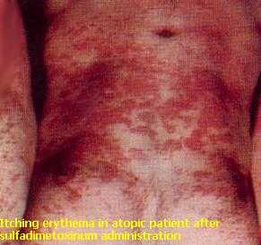
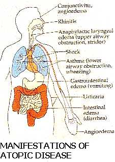

ANAPHYLAXIS
Anaphylaxis may be defined as a rapidly developing immunologic reaction occurring within minutes after the combination of an antigen with antibody bound to mast cells or basophils. It may occur as a systemic disorder or as a local reaction. The systemic reaction usually follows an intravenous injection of an antigen to which the host has already become sensitized. Often, within minutes a state of shock is produced, which is sometimes fatal. Local reactions depend on the portal of the allergen and take the various forms of inflammation. Many anaphylactic phenomena display 2 distinct phases – early and late. Early phase occupies the period between several seconds and 1 hour after allergen offence and is related to mast cells and basophils degranulation. Late phase starts between 2 and 8 hours and may occupy up to 48 hours, involving the mechanism of eosinophil cumulating and activation. But late phase may occur in one individual and absent in another, even if allergen was the same, so its display depends of individual reactivity.
As it has already been mentioned earlier, anaphylaxis was the first experimental allergic phenomenon reproduced on animals (Ch. Richet, P. Portier, 1902). The term “anaphylaxis” means, “reversed defense”. Even the first publication on anaphylaxis immediately stressed controversially nature of this process, combining in one phenomenon both self-alteration and defense.
For some time it was mistakenly believed, that the mechanism of anaphylaxis is neural. The great role in the history of anaphylaxis research belongs to experiment of two German doctors: K. Prausnitz and H. Kustner (1921). Sharing common love to beer, the friends, however, adhered to various traditions in the field of hors d'oevres. Кustner did not tolerate a fish, which caused in him itching skin rash. Having taken blood serum from Кustner and having injected it to Prausnitz, the friends have managed to show that the skin of last person has got the ability to develop similar urticae at the site of intradermic injection of fish extract.


This test, later called Prausnitz-Kustner reaction, is proving that anaphylaxis does not depend on nervous system, but results from some soluble serum factor(s) conditionally referred to as “anaphylactogen”. 2 years later A.F. Coca and R.A. Cook (1923) have described “atopic” or strange disease, as typical combination of hay fever, eczema, bronchial asthma and urticaria occurring in the same individuals at different moments of their life. They also pointed to the familiar character of predisposition to all this symptoms, previously considered to be irrelevant or born by different forms of pathology. So, the genetic background of anaphylaxis was finally appreciated and its variance esteemed. Soon it was suspected, that the anaphylactogen belong to g - globulin serum fraction. An important achievement was a discovery of K. Ishizaka et al., that anaphylactic activity is inherent to IgE (1966), having in their special domain, which is recognized by Fce -Receptor and supplies these antibodies with cytophilyc abilities. Later similar property was found in human IgG4 and rodent IgG1.According to uptodate understanding of anaphylaxis, the crucial role in determination of IgE level belongs to genetically determined specific of cooperation between APC and T-helpers.
Depending on allergen type, its dose and route of penetration, as well as on genetic background of an individual, mainly his/her MHC-haplotype, any immune response may proceed with preponderant formation of either Th1 or Th2 CD4+ lymphocytes-helpers. T h2 –helpers are able upon activation secret significant amounts of IL-4 and IL-13 (along with IL-2 production). A lot of B-cells, stimulated by this special T-subset, after plasma cell transformation will synthesize IgE and G4 instead of IgG2a. These Ig, upon next contact with the same offending allergen, may trigger early stage of anaphylaxis. IL-13 acts weaker, but in prolonged manner, comparing to IL-4.
T h2 –helpers are practically devoid of IFNg -secreting ability and do not produce TGFb . But, they are competent to produce, besides the aforementioned activators of reagin antibody synthesis, also IL-5 (growth and activation promoter for eosinophils) and IL-9 (growth factor for mast cells).
It has been demonstrated that IL-4 and IL-13 accelerate T h2 –helper differentiation. The maturing of alternative T h1 –helpers, decreasing the risk of anaphylaxis, is controlled by IL-12, secreted by phagocytes - macrophages.
Hence, it is not excluded that the intimate balance between IL-12 and its counterparts – IL-4, IL-13, IL-9 and IL-5 plays an important part in the selection of immune response normergic or anaphylactic pathway.
The whole ensemble of another cytokines may influence the development of anaphylaxis. As mentioned above, IL-5 facilitates the production and activation of eosinophils, responsible for late stage of anaphylaxis, IL-10 prevents the development of normergic immune response, as a blocker of cytokine cascade. Interferones, especially IFNg (and to a less degree also IFNa ) are strong suppressors of anaphylactic Ig production. According modern concept, induction of anaphylaxis requires short time direct contact between B and Th2 cells and can be inhibited by immunosuppressor mechanisms. Initial stage of reagin production is stimulated by such a contact and IL-4. Later, IL-4 promotes the expression of low affinity Fce -receptor of 2nd type on the B-lymphocytes. This receptor splits the soluble fragments, known as serum IgE-binding factors. They act on B cells in autocrine way and support the production of IgE, probably with participation of IL-13, IL-5 and IL-6. In humans the precise molecular mechanisms of soluble Fce -receptor fragments are not yet understood. But, in rodents, according to the data, obtained by Ishizaka et al. (1989), highly glycosylated soluble receptor fragment increases the production of IgE, and analogous low glycosylated fragment decreases IgE synthesis. The degree of glycosylation is essential for determination of the character of these fragments influence over B cells of memory, bearing surface IgE. The tissue messenger of glucocorticoid immunosuppression effect – lipomodulin – decreases the grade of glycosylation. The kinins, produced by T-cells make the fragments more glycosylated. The balance of all this regulators alters the level of anaphylactic antibody biosynthesis. The fact, that high level of glycosylation is risky for anaphylaxis is in full accordance with old imaginations about the exacerbation of anaphylaxis in sweet eaters. It seems proven, that the dose equation of allergen and Ig is of some significance for the spectrum of activated T-helpers and set of secreted cytokines. Thus, introducing allergen in different doses and schedules, it is possible to shift the level of anaphylactic sensitization. The anaphylaxis is easily reproduced in slight excess of an allergen (5:3 or 3:2), but can be suppressed in 2:1.
A.M. Bezredka (1907) invented the method for decreasing of anaphylactic sensitization by means of subdivided intradermic boosts, and than – hypodermic injections of anaphylactogen in small doses. This is so called specific desensitization (with allergen). It is effective in anaphylaxis, much less helpful in other immediate hypersensitivity reactions and absolutely useless in DTH. Bezredka’s method changes the subset content of activated T-helpers.
So, the anaphylaxis is mediated by special reaginic of cytophilyc antibodies, covering the surface of some cells and, on contact with offending allergen, triggering their degranulation and liberation of short-lived autocoids, responsible for hyperergic inflammation.
NEXT CHAPTER
OR